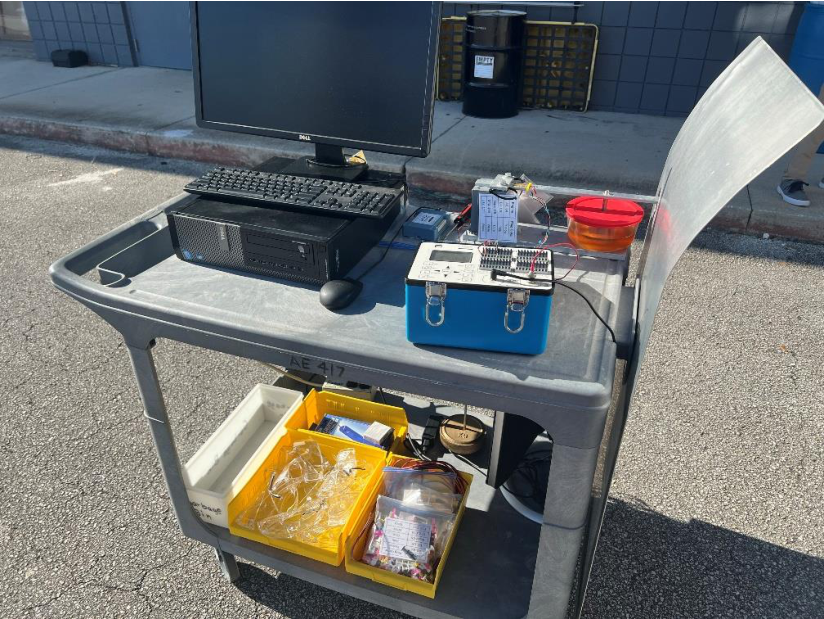

Experiment Overview
Every rocket motor — from a model rocket to a solid rocket booster — must be characterized by its thrust-time profile before it can be reliably used in a vehicle design. The thrust curve tells you peak load, average thrust, total impulse, and burn duration: the four numbers that define a propulsion system’s capability. This lab designed and calibrated a strain-gage cantilever beam load cell, then used it to fire-test five Estes solid rocket motors of increasing power class and verify their performance against published specifications.
- Build and statically calibrate a strain-gage cantilever beam load cell using known masses to create a voltage-to-force conversion
- Record thrust-time profiles for five motors: A8-3, B4-4, C6-5, C11-0, and E16-4
- Extract peak thrust, average thrust, burn time, and total impulse from each curve
- Compare C6-5 measured performance against Estes manufacturer specifications and quantify deviations

